Bibliothek: Karten mit Fortschritt je Fassung
- Je vorhandener Fassung (Text, Hörbuch, Kurzbuch) eine Zeile: Symbol, Name, eigener Balken, Wert; Klick startet genau diese Fassung (44 px).
- Hörbuch zeigt immer die Dauer: begonnen „noch …“, sonst Gesamtdauer – auch neben einem Text.
- Kurzbuch sichtbar und direkt startbar, bei mehreren Sprachen mit Sprachkennung.
- Ein Menü (⋮): Details, Hören und mitlesen, Kurzbuch öffnen | Übersetzen, Kurzbuch, KI-Dokument, Exportieren | Fertig, Titel, Cover, Auswählen | Entfernen.
- Weitermachen über die volle Breite (4 bei 1440 px, mehr bei breiten Fenstern), Abspielen auf dem Cover; „In Arbeit“ darunter.
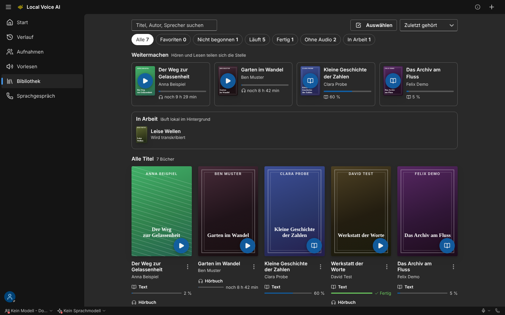
karten-01-uebersicht-1440-dunkel.png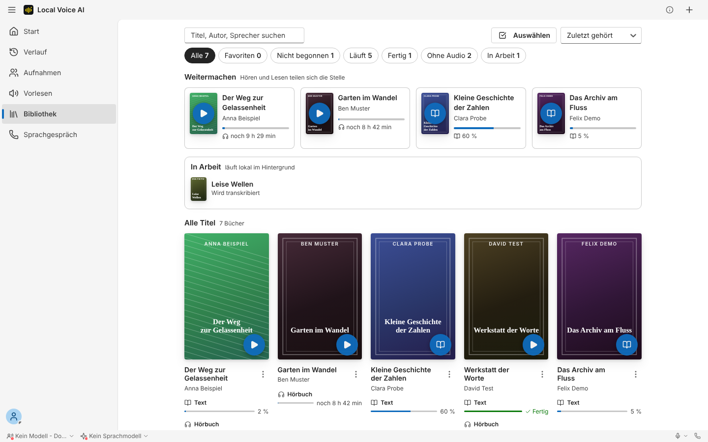
karten-01-uebersicht-1440-hell.png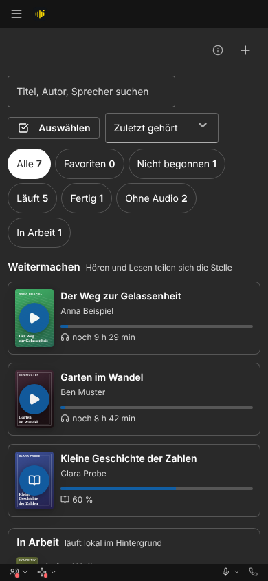
karten-01-uebersicht-390-dunkel.png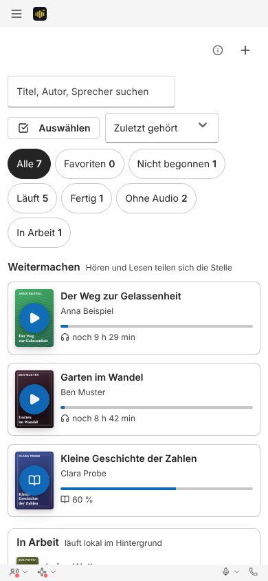
karten-01-uebersicht-390-hell.png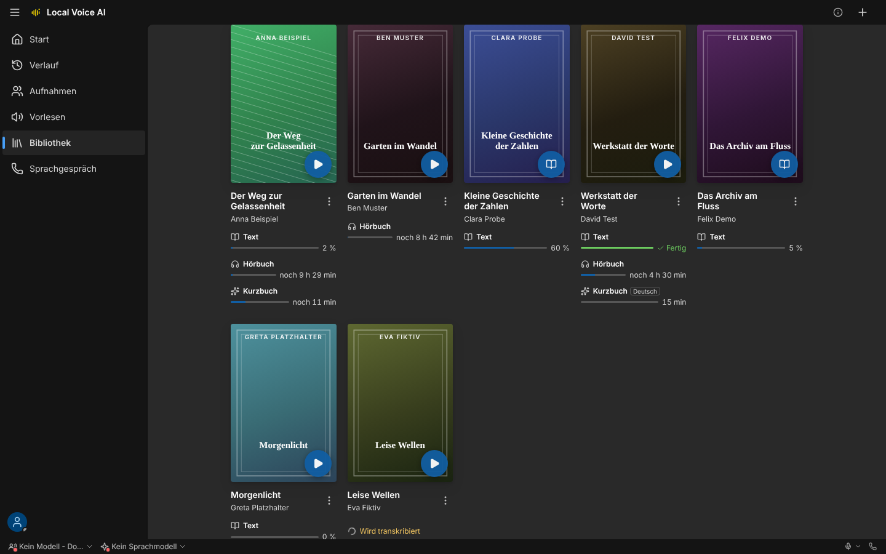
karten-02-raster-1440-dunkel.png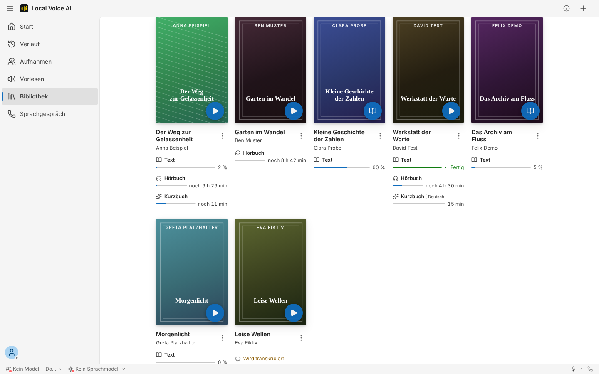
karten-02-raster-1440-hell.png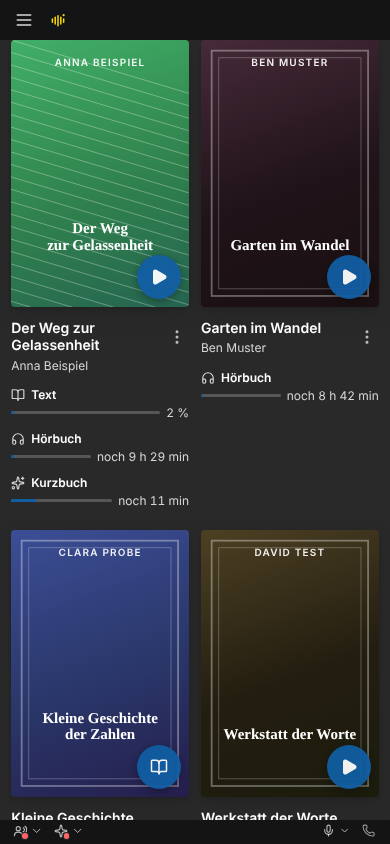
karten-02-raster-390-dunkel.png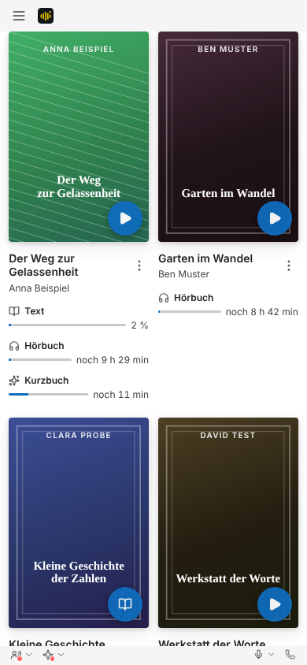
karten-02-raster-390-hell.png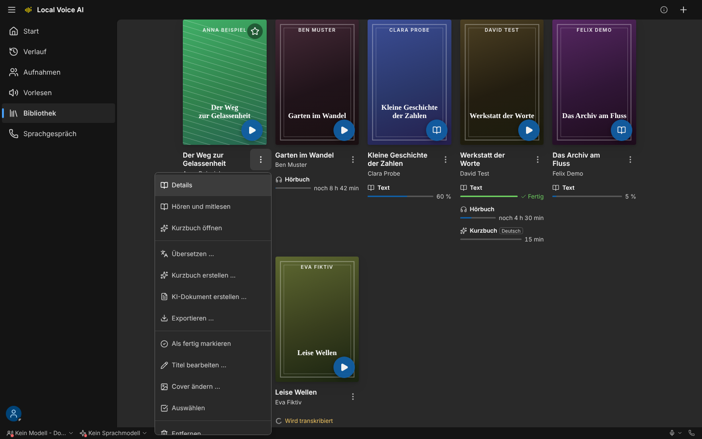
karten-03-menue-1440-dunkel.png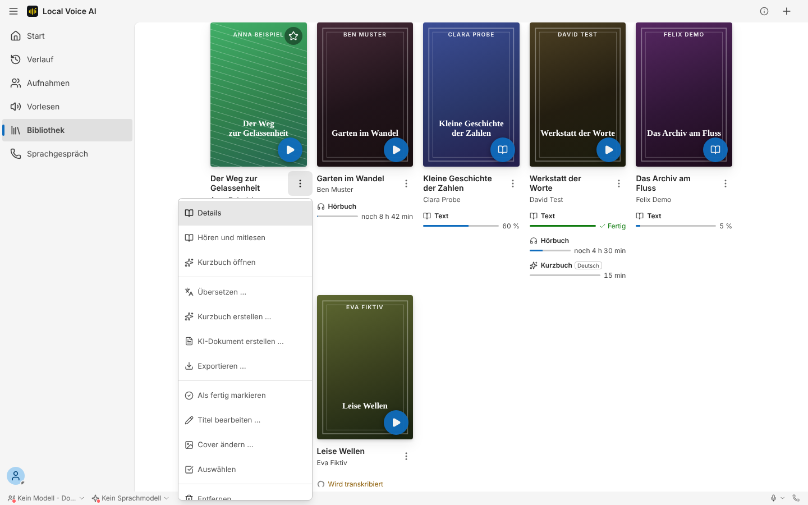
karten-03-menue-1440-hell.png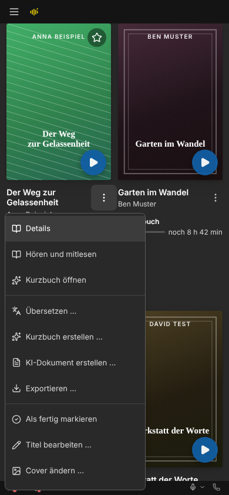
karten-03-menue-390-dunkel.png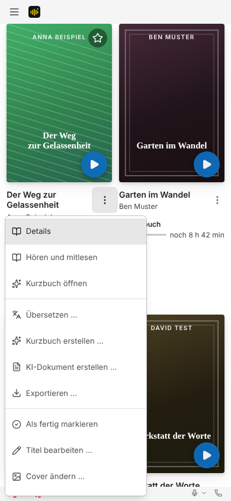
karten-03-menue-390-hell.png